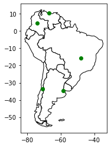

GeoPandas¶
GeoPandas is a library that extends Pandas for geospatial data.
import geopandas as gpd
import pandas as pd
import matplotlib.pyplot as plt
df_cities = pd.DataFrame({
'city': ['Buenos Aires', 'Brasilia', 'Santiago', 'Bogota', 'Caracas'],
'country': ['Argentina', 'Brazil', 'Chile', 'Colombia', 'Venezuela'],
'lat': [-34.58, -15.78, -33.45, 4.60, 10.48],
'lon': [-58.66, -47.91, -70.66, -74.08, -66.86]
})
df_cities
| city | country | lat | lon | |
|---|---|---|---|---|
| 0 | Buenos Aires | Argentina | -34.58 | -58.66 |
| 1 | Brasilia | Brazil | -15.78 | -47.91 |
| 2 | Santiago | Chile | -33.45 | -70.66 |
| 3 | Bogota | Colombia | 4.60 | -74.08 |
| 4 | Caracas | Venezuela | 10.48 | -66.86 |
gdf_cities = gpd.GeoDataFrame(
df_cities,
geometry=gpd.points_from_xy(df_cities.lon, df_cities.lat),
crs=4326
)
gdf_cities
| city | country | lat | lon | geometry | |
|---|---|---|---|---|---|
| 0 | Buenos Aires | Argentina | -34.58 | -58.66 | POINT (-58.66000 -34.58000) |
| 1 | Brasilia | Brazil | -15.78 | -47.91 | POINT (-47.91000 -15.78000) |
| 2 | Santiago | Chile | -33.45 | -70.66 | POINT (-70.66000 -33.45000) |
| 3 | Bogota | Colombia | 4.60 | -74.08 | POINT (-74.08000 4.60000) |
| 4 | Caracas | Venezuela | 10.48 | -66.86 | POINT (-66.86000 10.48000) |
gdf_world = gpd.read_file(gpd.datasets.get_path('naturalearth_lowres'))
gdf_world.head()
| pop_est | continent | name | iso_a3 | gdp_md_est | geometry | |
|---|---|---|---|---|---|---|
| 0 | 920938 | Oceania | Fiji | FJI | 8374.0 | MULTIPOLYGON (((180.00000 -16.06713, 180.00000... |
| 1 | 53950935 | Africa | Tanzania | TZA | 150600.0 | POLYGON ((33.90371 -0.95000, 34.07262 -1.05982... |
| 2 | 603253 | Africa | W. Sahara | ESH | 906.5 | POLYGON ((-8.66559 27.65643, -8.66512 27.58948... |
| 3 | 35623680 | North America | Canada | CAN | 1674000.0 | MULTIPOLYGON (((-122.84000 49.00000, -122.9742... |
| 4 | 326625791 | North America | United States of America | USA | 18560000.0 | MULTIPOLYGON (((-122.84000 49.00000, -120.0000... |
gdf_south_america = gdf_world.loc[world.continent == 'South America']
gdf_south_america.head()
| pop_est | continent | name | iso_a3 | gdp_md_est | geometry | |
|---|---|---|---|---|---|---|
| 9 | 44293293 | South America | Argentina | ARG | 879400.0 | MULTIPOLYGON (((-68.63401 -52.63637, -68.25000... |
| 10 | 17789267 | South America | Chile | CHL | 436100.0 | MULTIPOLYGON (((-68.63401 -52.63637, -68.63335... |
| 20 | 2931 | South America | Falkland Is. | FLK | 281.8 | POLYGON ((-61.20000 -51.85000, -60.00000 -51.2... |
| 28 | 3360148 | South America | Uruguay | URY | 73250.0 | POLYGON ((-57.62513 -30.21629, -56.97603 -30.1... |
| 29 | 207353391 | South America | Brazil | BRA | 3081000.0 | POLYGON ((-53.37366 -33.76838, -53.65054 -33.2... |
ax = gdf_south_america.plot(color='white', edgecolor='black')
gdf_cities.plot(ax=ax, color='green')
plt.show()

For more information, see the documentation.